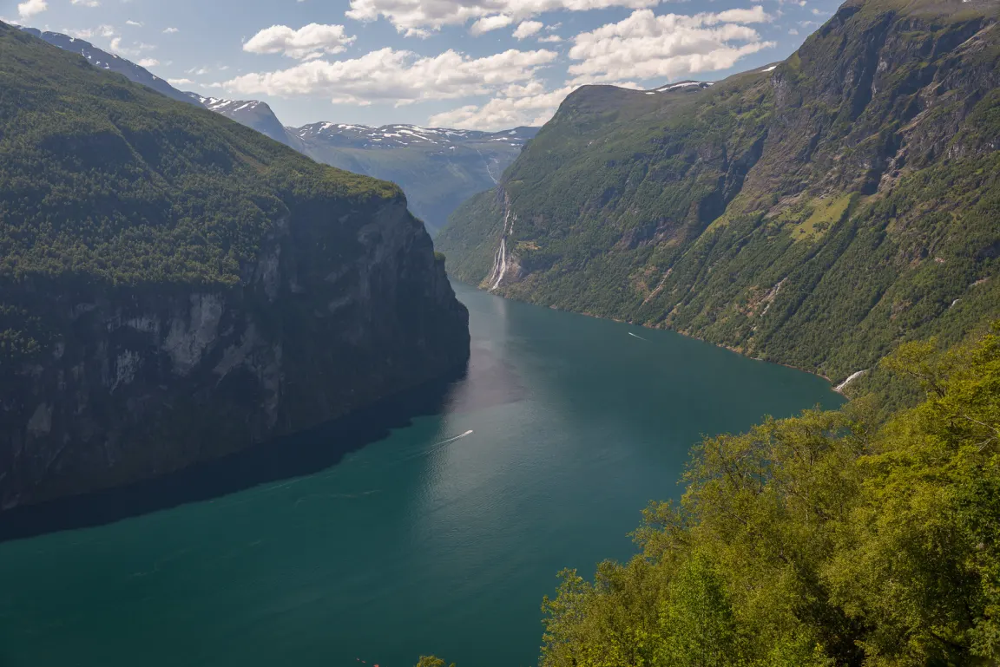
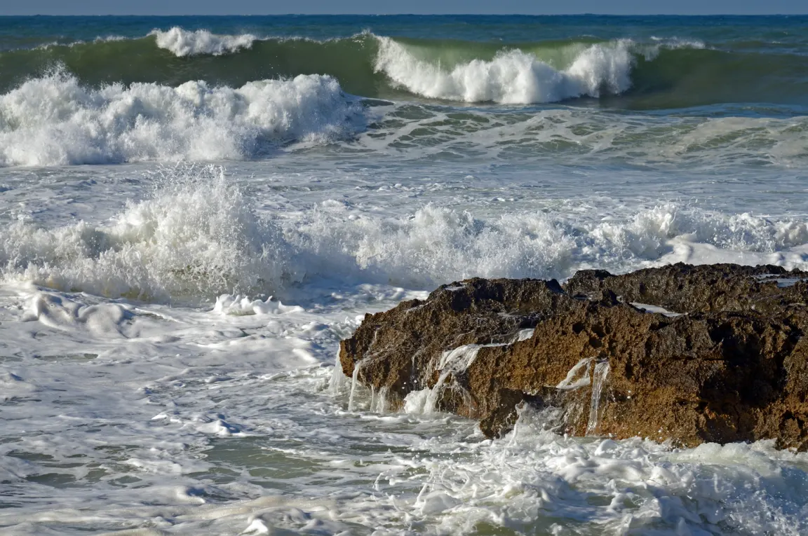
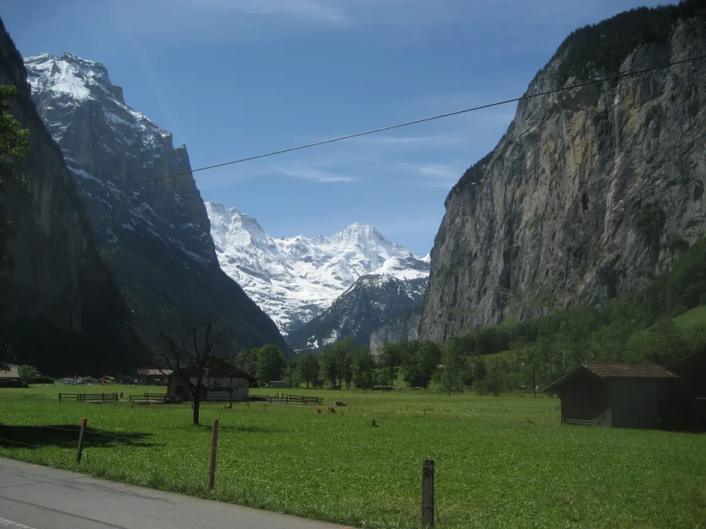
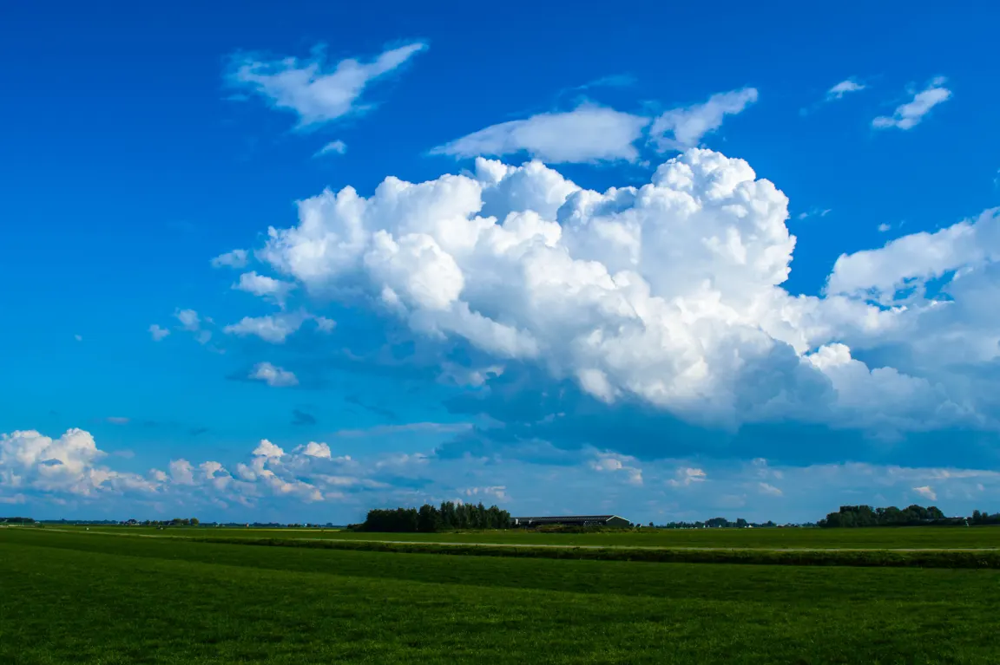
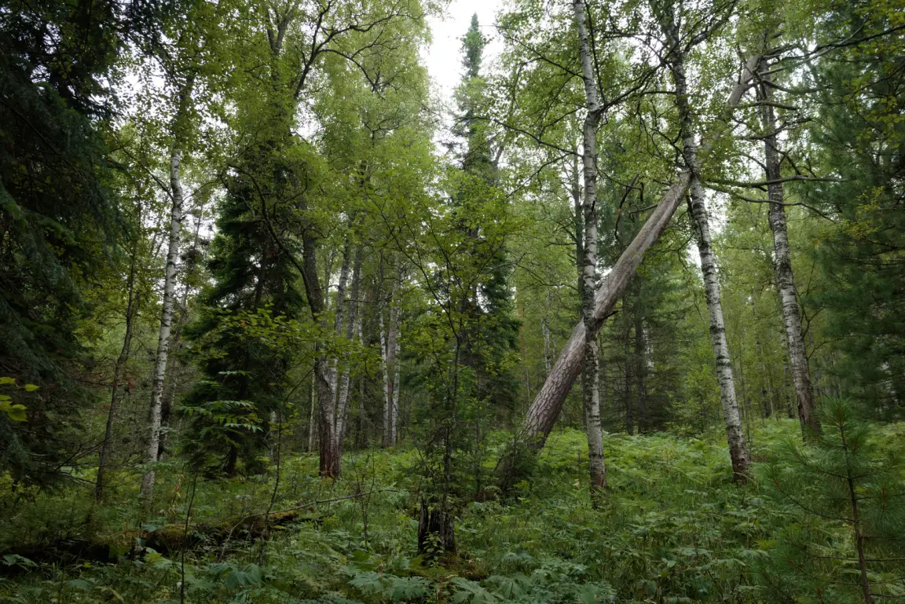
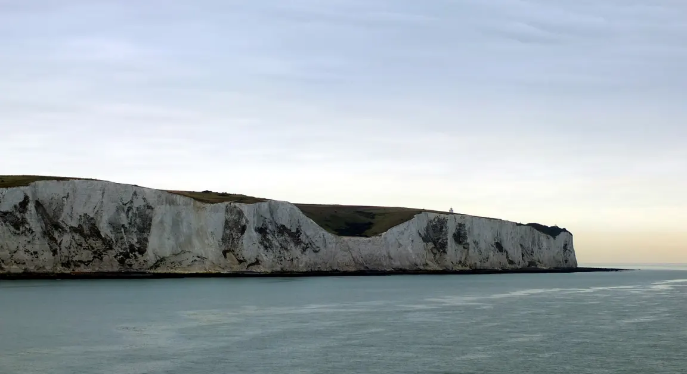

Pro 8. ročník: státy a regiony Evropy, jejich příroda a hospodářství.
Šest tváří evropské krajiny
Porovnej reliéf, podnebí, vegetaci a využití půdy. Fotografie ukazují, proč se evropské regiony liší přírodními podmínkami i způsobem života.

Severní Evropa — norský fjordLedovec vyhloubil hluboké údolí, které po jeho ústupu zaplavilo moře.

Jižní Evropa — StředomoříTeplé suché léto, členité pobřeží a moře podporují cestovní ruch i středomořské zemědělství.

Střední Evropa — AlpyVysoké mladé pohoří má ostré štíty, ledovcová údolí a výraznou výškovou stupňovitost.

Západní Evropa — nizozemský polderNízkou rovinu chrání hráze; hladinu vody řídí hustá síť kanálů a čerpacích zařízení.

Východní Evropa — ruská tajgaChladné kontinentální podnebí vytváří rozsáhlý pás jehličnatých a smíšených lesů.

Západní Evropa — britské pobřežíVlny a zvětrávání neustále modelují světlé křídové útesy otevřeného atlantského pobřeží.
Evropa se dělí na regiony: severní (Skandinávie), západní, jižní (Středomoří), střední a východní Evropu. Nejvyšší pohoří jsou Alpy, nejdelší řekou Evropy je Volha.